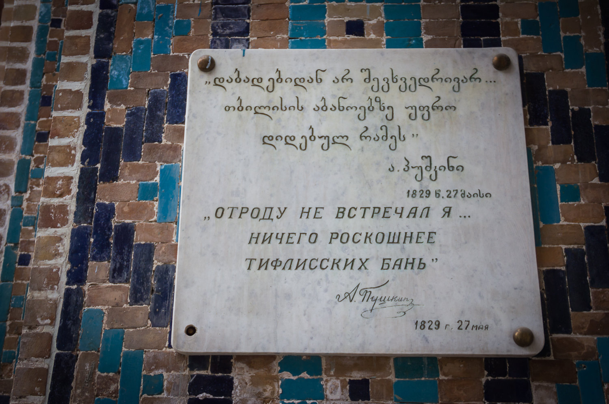
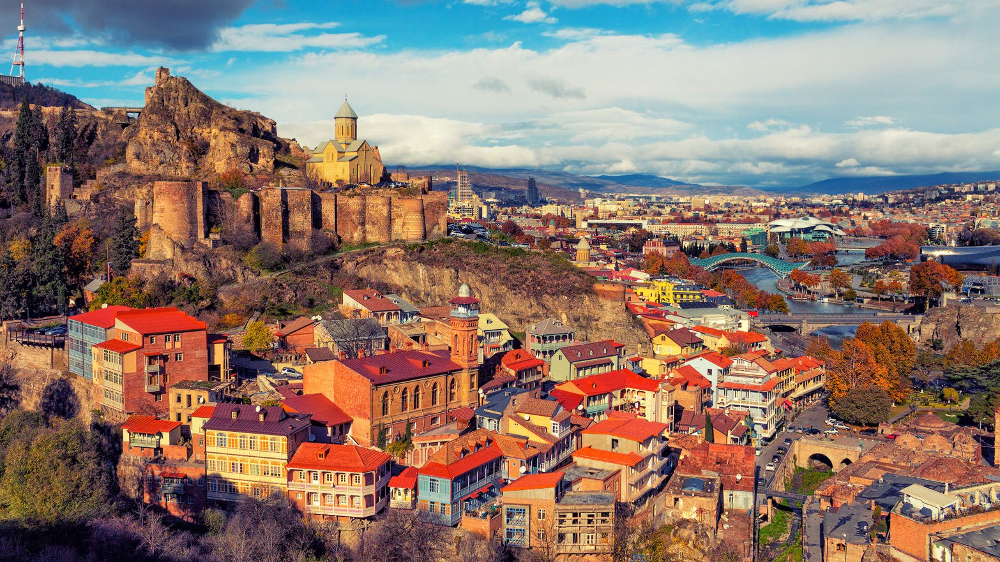
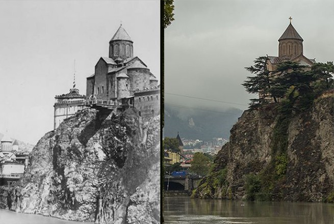
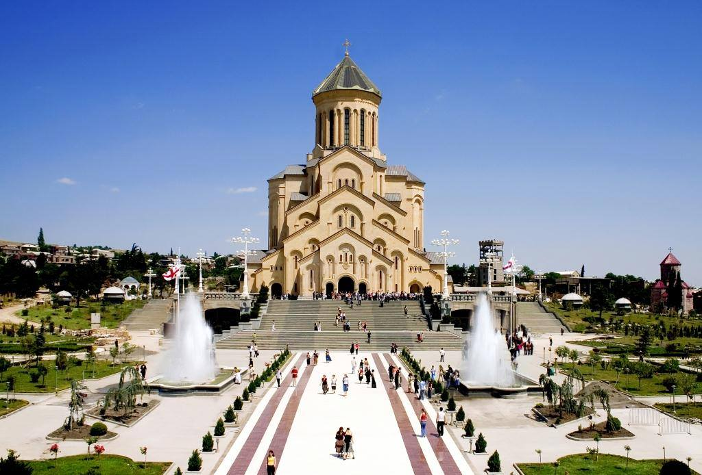
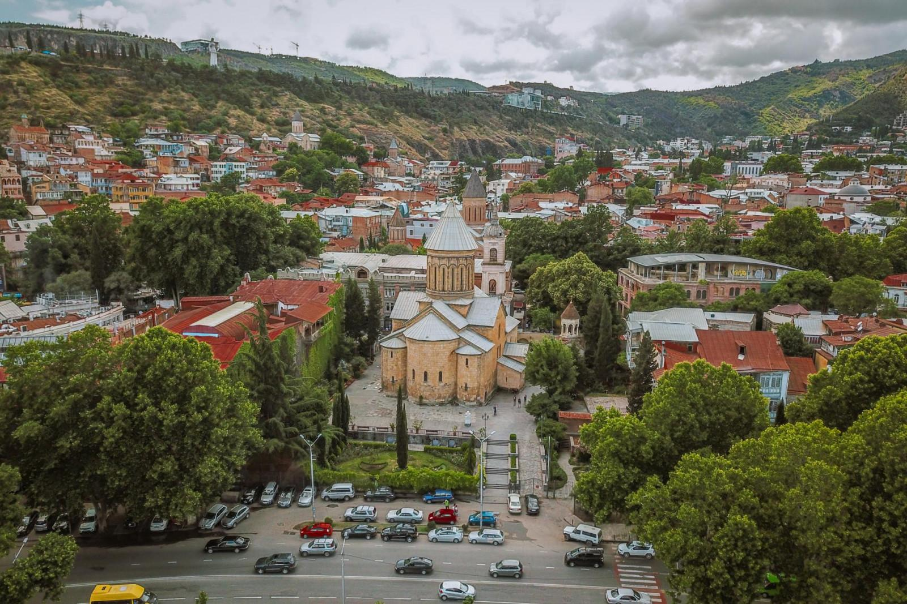
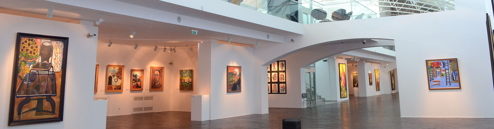
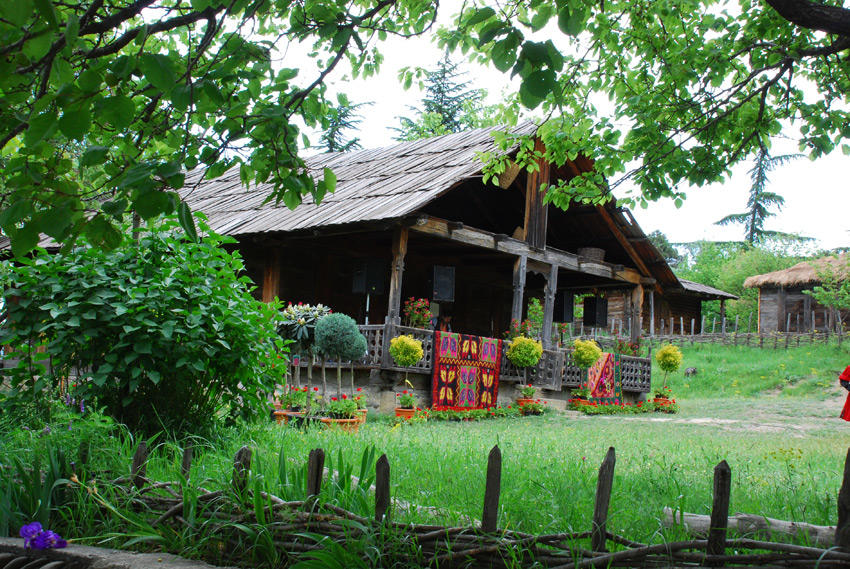

I L O V E ♡ tbilisi ❣
ლეგენდის თანახმად, თბილისის ტერიტორია ტყით ყოფილა დაფარული, ქართველ მეფეს (ერთ-ერთი ვარიანტით, ვახტანგ I გორგასალს) ნადირობის დროს შველი დაუჭრია, შველი ცხელ წყაროში განბანილა და განკურნებული გაქცევია მონადირეებს (სხვა ვარიანტით, მეფის მიმინო თავს დასცხრომია ხოხობს, ფრინველები ცხელ წყაროში ჩაცვივნულან და გაფუფქულან). ცხელი წყლის სამკურნალო თვისებებისა და ადგილის ხელსაყრელი მდებარეობის გამო მეფეს ტყე გაუკაფავს და ქალაქი გაუშენებია. „თბილისი“ — „თბილი“ (ძვ. ქართულად „ტფილი“) მინერალური წყაროების გამო უწოდეს ქალაქს. შემდგომში ამ ადგილზე გოგირდის აბანოები გაშენდა. აღნიშნული ადგილი თბილისის ისტორიული უბანი — აბანოთუბანია.

რას წერდა პუშკინი
იცით, რომელია ყველაზე მშობლიური ქალაქის ყველა სურნელიდან თითოეული თბილისელისთვის? ოღონდ, არ გაგეცინოთ — ეს გოგირდის აბანოების სუნია. დიახ, დიახ! ეს მკვიდრ თბილისელად განათვლის ადგილია. ბავშვობაში აბანოში თუ არ ყოფილხარ, კვირაში ერთხელ ტფილისურ გოგირდის წყალში თუ არ განბანილხარ, მაშინ არც ტფილისისა გცოდნია რამე და არც არაფერი გაგეგება ამ ქალაქისა.
სტინგის აბანოს დღე
აბანოთუბანი დღემდე ერთ–ერთი ყველაზე ხალხმრავალი ადგილია ქალაქში. რაც არ უნდა იყოს, მაინც დედაქალაქის გულია. სწორედ აქედან დაიწყო ტფილისის შენება. საქართველოში ერთ დღეს ჩამოსულმა მსოფლიო ვარსკვლავმა სტინგმაც შეიარა გარნიზონის აბანოში. მურაბა მოეწონა თუ მექისე, მაგრამ ორი დღის მერე ისევ მივიდა გოგირდის წყლით სიამოვნების მისაღებად.
ნეტა ამ ხედებს ქვეყანაზე რა შეედრება
ციხე-ტაძრები ცად ასულან ლოცვა-ვედრებად.
წევს ვეფხის ტყავზე საქართველო - მზისწილხვდომილი,
თავს დასდგომია იალბუზი ხელ აპყრობილი.
თითქოს ლოცულობს, ცად აღავლენს ხმათა ხავერდებს,
და საქართველოს დღეგრძელობას გამჩენს ავედრებს.
თრთის ვენახები... თრთის ყანები... თრთის გალავნები...
თრთის საფლავები წმინდანების და ფალავნების..
ნარიყალა
თბილისის უძველეს ციხე, რომლის ნანგრევები დღეს სოლოლაკის ქედზეა შემორჩენილი, უწოდებდნენ "დედაციხეს", "ნარიყალას", "შურის ციხეს" და "კალას". წერილობითი....
მეტეხი
მეტეხი ისტორიული უბანია მდინარე მტკვრის მარცხენა ნაპირზე კლდოვან შემაღლებაზე ავლაბარში, თბილისი. ეს ყველაზე ადრეული დასახლება იყო ქალაქის ტერიტორიაზე. ტრადიციული....
სამება
სამება მთავარ მართლმადიდებლურ ქრისტიანულ ტაძრად ითვლება საქართველოში. ტაძრის აშენების იდეა ქართული მართლმადიდებლური ეკლესიის ავტოკეფალიის 1500 წლისთავისა და ქრისტეს დაბადების 2000 წლის აღსანიშნავად გაჩნდა
სიონი
ყოვლადწმიდა ღვთისმშობლის მიძინების სახელობის (სიონის) საკათედრო ტაძრის მშენებლობა მტკვრის მარჯვენა სანაპიროზე VI საუკუნეში ქართლის ერისმთავრის გუარამ კურაპალატის....
საქართველოს ეროვნული მუზეომი

თბილისის უძველეს ციხე, რომლის ნანგრევები დღეს სოლოლაკის ქედზეა შემორჩენილი, უწოდებდნენ "დედაციხეს", "ნარიყალას", "შურის ციხეს" და "კალას". წერილობითი....
თანამედროვე ხელოვნების მუზეუმი
ქართული სახვითი ხელოვნების მუზეუმი 2018 წლის 2 ოქტომბერს გაიხსნა. მუდმივი ექსპოზიციები სამ სართულზე, 31 დარბაზში და 3 კიბის უჯრედშია განთავსებული. მუზეუმში წარმოდგენილია ქართული სახვითი ხელოვნების პერიოდი - 1945 წლიდან დღემდე. კოლექციაში ასევე ნახავთ 1920-იანი წლების რამდენიმე მნიშვნელოვან ნამუშევარს.
ეთნოგრაფიული მუზეუმი თბილისი
ეთნოგრაფიული მუზეუმი წარმოადგენს საქართველოს მინიატურულ მოდელს და ასახავს მის მრავალფეროვან ეთნოკულტურას. მუზეუმი მოიცავს 14 ეთნოგრაფიულ ზონას: ქართლი, სამეგრელო, აჭარა, აფხაზეთი, სვანეთი, ხევსურეთი, კახეთი, მესხეთი, ჯავახეთი, გურია, იმერეთი, რაჭა და ლეჩხუმი.